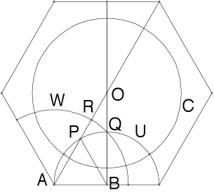

Step 3
| Draw the circle with center A and passing through Q. |
| Let R denote the intersection of this circle and the segment OA. |
|  |
| Generating the arc RQ. |
| We show |
| 1. The circle W with center A and passing through Q is a geodesic in the Poincare disc. Proof |
| 2. The arc RQ bisects the angle OQP. Proof |
| 3. The arc RQ is orthogonal to the segment AO. Proof |
| So we have shown |
|
|
|
Return to construction.